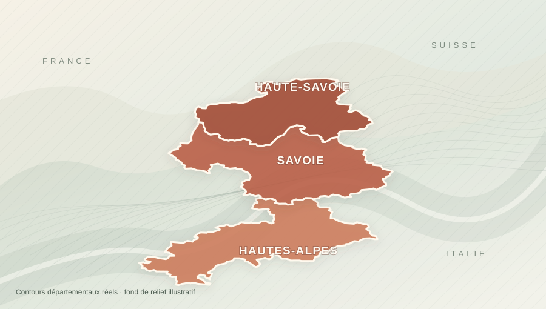

Nous parlons de votre projet.
Vous décrivez votre niveau, votre groupe et vos attentes. Nous échangeons directement sur WhatsApp.

Des années de compétition forgent un savoir rare. Ski Society se construit pour vous permettre d’apprendre auprès d’anciens compétiteurs diplômés, avec un enseignement privé exigeant, humain et adapté à votre niveau.
Progresser, partager, découvrir : quatre façons de vivre la montagne avec un accompagnement attentif et personnalisé.
Le haut niveau forge une lecture du terrain, une précision et une discipline. Ski Society veut transformer cet héritage en un enseignement attentif, pour chaque skieur, du débutant au passionné.
Nous prenons le temps de comprendre votre niveau, vos attentes et votre groupe.
Nous étudions le moniteur et la station adaptés, puis confirmons les disponibilités.
Matériel entretenu, préparation et ponctualité : les standards visés pour chaque partenaire.
Des conseils précis, un rythme juste et le plaisir de skier ensemble.
De la Haute-Savoie aux Hautes-Alpes, en passant par la Savoie : des massifs différents, une même envie de transmettre le plaisir du ski. La destination se choisit selon votre niveau, votre projet et les conditions.
D'autres stations peuvent être envisagées selon les disponibilités, les qualifications et le cadre professionnel applicable.
Parlons de votre prochaine journée
Une expérience personnelle, de la première prise de contact aux derniers virages.
Vous décrivez votre niveau, votre groupe et vos attentes. Nous échangeons directement sur WhatsApp.
Station, conditions, objectifs, profil et disponibilité du moniteur : les éléments sont confirmés avant tout engagement.
Une pédagogie précise, une attention à votre sécurité et une journée pensée à votre rythme.

Quinze années de compétition, sept années à enseigner à l’ESF : j’ai appris que l’exigence du haut niveau ne disparaît pas avec le dernier dossard.
J’ai vu des sportifs mettre fin à leur carrière après des milliers d’heures sur les skis. Avec Ski Society, je veux donner une seconde vie à cette expérience : une carrière qui reconnaît leur parcours et un enseignement enrichi pour les clients.
Le collectif se construit progressivement. Qualifications, parcours, assurances et matériel des futurs moniteurs partenaires seront vérifiés avant leur présentation.
Ces avis concernent l’enseignement réalisé avant la création de Ski Society. Ils ne reflètent pas encore l’expérience des futurs moniteurs du collectif.
Avis historiques du fondateur ; note à revérifier avant lancement.
Non. Nous en discutons selon votre groupe, votre niveau, les conditions et le cadre d’intervention du moniteur confirmé.
Oui. L’expérience sportive d’un moniteur sert aussi à expliquer simplement, mettre en confiance et adapter les exercices. L’excellence de l’encadrement ne dépend pas de votre niveau.
Le collectif est en cours de constitution. L’objectif est de réunir des moniteurs diplômés ayant un solide passé en compétition, sélectionnés aussi pour leur pédagogie, leurs assurances et la qualité de leur équipement. Le profil sera communiqué avant toute réservation.
Nous voulons valoriser un vécu sportif souvent peu visible dans l’enseignement : des années de technique, d’entraînement, d’analyse et de compétition. Cette expérience complète la qualification professionnelle ; elle ne remplace ni le diplôme, ni les qualités pédagogiques.
L’entretien du matériel personnel et la préparation font partie des standards que Ski Society souhaite imposer aux moniteurs. Toute sortie hors-piste exige en plus une évaluation des conditions, des équipements de sécurité et des qualifications et autorisations applicables.
Racontez-nous vos envies. Chaque demande est étudiée individuellement et vous informe du moniteur disponible, de son parcours et des conditions avant toute confirmation.
01. Vous remplissez les informations.
02. WhatsApp s’ouvre avec votre message déjà rédigé.
03. Vous vérifiez le texte, puis appuyez sur Envoyer dans WhatsApp.

Une technique d’exception se transmet avec simplicité. Parlons de votre niveau, de vos envies et du terrain qui vous correspond.
Décrire ma journée